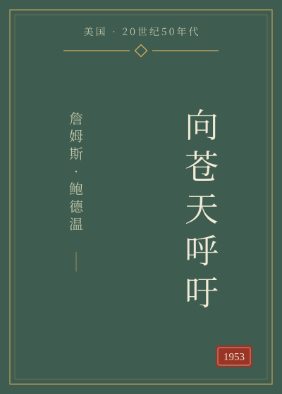
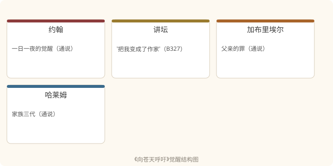

向苍天呼吁
一、基本信息
| 作者 | 詹姆斯·鲍德温 |
|---|---|
| 成书/出版 | 1953年（Britannica B327：Go Tell It on the Mountain (1953)——'semiautobiographical first and finest novel'） James Baldwin — Encyclopaedia Britannica（百科全书） |
| 国别/地区 | 美国 |
| 时代 | 现当代 · 20世纪50年代 |
| 体裁 | 长篇小说 |
| 语言 | 英语 |

《向苍天呼吁》觉醒结构图（主题·结构图）
二、创作背景
Britannica（B327）：Go Tell It on the Mountain——鲍德温'semiautobiographical first and finest novel'（半自传性的第一部也是最优秀的长篇）。
Britannica（B327）：小说取材鲍德温少年时期的讲道岁月——'Those three years in the pulpit…that is what turned me into a writer.'（正是讲坛上的那三年把我变成了作家）。
题材（通说待核）：哈莱姆黑人少年约翰一日一夜间的宗教觉醒与家族史闪回。
三、内容脉络
少年约翰一日一夜的宗教觉醒与格里格斯家族三代人的罪与救赎（家族结构通说待核——B327未载人物名）。
父亲加布里埃尔的过往与约翰的身份追问（通说待核）。
四、主要人物表
| 人物 | 身份 | 说明 |
|---|---|---|
| 约翰（John） | 少年 | （通说待核，B327未载人名） |
| 加布里埃尔（Gabriel） | 父亲 | （通说待核，B327未载） |
五、主题与艺术特点
- 宗教觉醒：讲坛岁月的书写（B327：draws on his years as a teenage preacher）。
- 黑人家庭三代与身份追问（通说待核）。
- 写作的起点——'讲坛上的那三年把我变成了作家'（B327）。
六、影响与评论
- Britannica：'semiautobiographical first and finest novel'（B327）。
James Baldwin — Encyclopaedia Britannica（百科全书） - Britannica：鲍德温散文 The Fire Next Time (1963) 处于民权运动语境（B327 作品列表）。
James Baldwin — Encyclopaedia Britannica（百科全书）
七、阅读建议
难点
- 哈莱姆黑人教会语境与非裔大迁徙背景（通说待核）。
- 宗教语言与黑人灵歌传统（通说待核）。
- 《向苍天呼吁》中译本（人民文学/译林等——通说待核）。
- 英文原版。
鲍德温首选；可与《看不见的人》（1952）对读。
八、待核实
- 约翰·格里姆斯/加布里埃尔/伊丽莎白人名核对（B327未载）。
- 1953年出版（Knopf说）待核。
- '一日一夜'结构说法待核。